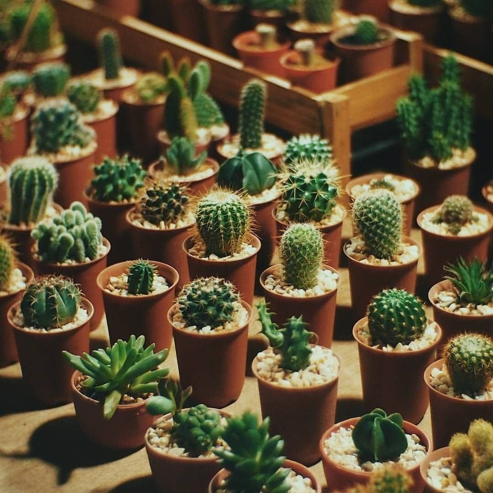

О магазине
Наш магизин работает с 2001 года и специализируется на кактусах. На нашем сайте вы можете увидеть сборник важных понятий для кактусов, а также прайс на наши услуги. Просмотреть виды кактусов можно в отдельной статье,так вы сможете подобрать для себя самый лучший вариант.